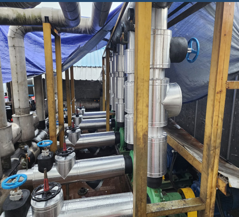
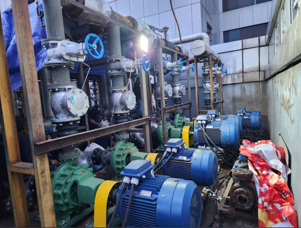
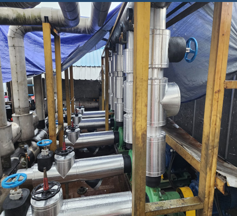
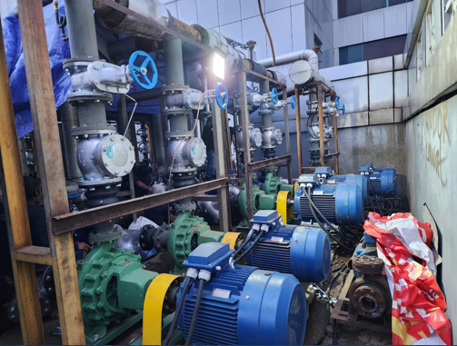

PT Sinar Sakti Elektrindo
Empowering Connections, Energizing The Future
Empowering Connections, Energizing The Future
PT. Sinar Sakti Elektrindo adalah perusahaan yang bergerak di bidang distribusi dan penyediaan produk serta layanan kelistrikan dan elektronik industri sejak tahun 2025, sebagai bentuk komitmen untuk menghadirkan solusi kelistrikan dan elektronik industri yang andal, efisien, dan sesuai dengan kebutuhan zaman. Perusahaan ini lahir dari visi untuk menjadi mitra strategis dalam pembangunan infrastruktur nasional melalui penyediaan produk dan layanan elektrikal yang berkualitas tinggi. Dengan filosofi kerja yang menempatkan integritas, keandalan, dan kepuasan pelanggan sebagai prioritas utama, PT. Sinar Sakti Elektrindo siap berkontribusi dalam menjawab tantangan sektor energi dan elektrifikasi nasional yang terus berkembang.
PT. Sinar Sakti Elektrindo didirikan untuk menjadi penyedia solusi kelistrikan dan otomasi industri yang profesional, efisien, dan inovatif guna mendukung pembangunan infrastruktur nasional dan mendorong kemandirian teknologi di bidang elektrikal. PT. Sinar Sakti Elektrindo juga mengedepankan kolaborasi strategis dengan berbagai produsen teknologi global, guna memastikan bahwa setiap solusi yang ditawarkan sesuai dengan standar kualitas internasional dan kebutuhan spesifik pasar Indonesia.
Menjadi perusahaan terdepan di Indonesia dalam penyediaan solusi kelistrikan dan elektronik industri yang inovatif, handal, dan berkelanjutan.

 


